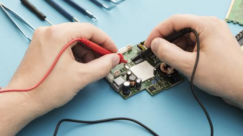

Ford · Kielce i okolice
Kluczyk Ford w Kielcach – od Fiesty i Focusa po Transita
Kluczyk Ford to w wielu modelach coś więcej niż pilot: chip immobilizera PATS, a w nowszych autach także system Intelligent Access. Zapasowy kluczyk do Fiesty, Focusa, Kugi czy firmowego Transita dorobimy i zakodujemy z dojazdem w Kielcach i okolicy, a przy Fordzie z importu od razu powiemy, czy menu można przestawić na polski.
Kluczyk Ford i immobilizer PATS
Fordy od lat chroni immobilizer PATS, w materiałach producenta nazywany też SecuriLock. W kluczyku jest transponder z unikalnym kodem, a silnik ruszy tylko z kluczykiem zapisanym w pamięci auta. Dlatego dorabianie kluczyka Ford to zwykle dwa kroki: nacięcie grota i zakodowanie nowego egzemplarza w samochodzie.
W Fordach spotyka się przede wszystkim trzy rodzaje kluczyków:
- kluczyk z nieruchomym grotem – w starszych modelach, z chipem w rękojeści, niekiedy z przyciskami centralnego zamka,
- kluczyk składany z pilotem – typowy m.in. dla Focusa drugiej generacji i Fiesty Mk7,
- kluczyk Intelligent Access – w części wersji Focusa, Mondeo czy Kugi; drzwi otwierasz bez wyjmowania go z kieszeni, a silnik uruchamiasz przyciskiem. W środku ukryty jest grot awaryjny.
W części Fordów jeden z kluczyków może być ustawiony jako MyKey – z ograniczeniem m.in. prędkości maksymalnej i głośności audio. Jeśli w używanym aucie jeden kluczyk „zachowuje się inaczej”, sprawdź opis tej funkcji w instrukcji obsługi.
Typowe problemy z kluczykami Forda
- Pilot przestał otwierać auto – w Focusie Mk2 czy Fieście Mk7 zwykle zaczyna się od wyczerpanej baterii. Instrukcje wielu Fordów, także dla kluczyków Intelligent Access, podają baterię CR2032. Jak ją wymienić, pokazujemy w artykule o wymianie baterii w kluczyku.
- Wyrobiony „scyzoryk” – grot ma luz, plastik pęka przy zawiasie, przyciski są przetarte.
- Pilot z internetu nie współpracuje – identycznie wyglądające kluczyki do Forda mogą mieć inny chip albo inną elektronikę pilota. Przed zakupem upewnij się, że pasuje do Twojej wersji – piszemy o tym w tekście o kluczykach kupowanych w sieci.
- Auto z Intelligent Access nie widzi kluczyka – zwykle winna jest słaba bateria. Ford przewiduje na taki wypadek zapasowe miejsce na kluczyk: w części modeli na kolumnie kierownicy, w innych w schowku konsoli lub w uchwycie na kubek. Gdy kluczyk tam leży, silnik uruchomisz przyciskiem, wciskając hamulec lub sprzęgło – dokładne miejsce wskaże instrukcja Twojego auta.
- Miga kontrolka immobilizera, auto nie zapala – przyczyną może być uszkodzony chip w kluczyku albo usterka po stronie samochodu. Objawy opisujemy w artykule miga kontrolka immobilizera.
Dorabianie i kodowanie kluczyka Ford w praktyce
Masz jeden działający kluczyk? To najprostsza sytuacja: dorabiamy i kodujemy zapasowy kluczyk albo pilot przy aucie – pod domem, firmą czy na parkingu (programowanie kluczy).
Nie masz już żadnego? Jeśli zgubiony kluczyk Ford był jedynym, w wielu modelach wykonamy nowy od zera, na miejscu postoju auta (utrata wszystkich kluczyków). Przy okazji usuniemy z pamięci kluczyki, których już nie masz – ważne np. wtedy, gdy były pracownik nie oddał kluczyka do firmowego Transita.
Intelligent Access? Nowy kluczyk trzeba zakodować w systemie bezkluczykowym, a ukryty w nim grot awaryjny naciąć tak, by otwierał drzwi przy rozładowanej baterii.
Kluczyki zostały w środku? Otwieranie Forda wykonujemy przede wszystkim profesjonalnymi dekoderami do zamków, tak by drzwi i szyby pozostały nietknięte (otwieranie samochodów). Jeśli natomiast silnik nie rusza mimo sprawnego kluczyka, sprawdzamy immobilizer i sterownik silnika (sterowniki).
Zakres zależy od modelu, rocznika i wersji systemu. Czy całość zrobimy przy aucie, powiemy po VIN – razem z ceną, zanim zaczniemy.
Ford z importu – język polski i kodowanie funkcji
Ford, obok Mazdy, to marka, w której oprócz kluczyków zajmujemy się kodowaniem: wgrywamy język polski, dorabiamy tylne światło przeciwmgłowe w autach z USA oraz aktywujemy lub wyłączamy wybrane funkcje. Szczegóły znajdziesz na stronie kodowanie Ford i Mazda, a w poradniku – co da się zmienić w menu i zegarach. Zakres zależy od modelu i wersji modułów, dlatego sprawdzamy go przed umówieniem terminu. Masz też Mazdę? Zajrzyj na stronę kluczyki Mazda.
Zanim przyjedziemy do Twojego Forda
- dokumenty: dowód osobisty i dowód rejestracyjny – kluczyki kodujemy i auta otwieramy dopiero po potwierdzeniu własności,
- VIN, model i rok produkcji – na tej podstawie wyceniamy pracę przez telefon,
- komplet kluczyków, które mają działać po kodowaniu, także zapasowy leżący w szufladzie,
- w Fordzie firmowym lub leasingowym – pisemne upoważnienie od właściciela.
Jeździsz Fordem z jednym kluczykiem? Dorób drugi teraz, póki pierwszy działa – kopia jest zwykle prostsza niż kluczyk od zera.
Usługi dla aut Ford

Otwieranie samochodów
Kluczyki zamknięte w kabinie lub bagażniku, rozładowany akumulator, zamek, który nie reaguje – otwieramy auto całą dobę.
Szczegóły
Dorabianie i kodowanie kluczy
Zapasowy kluczyk z chipem, pilot, keyless – dorabiamy i kodujemy, a zgubione kluczyki usuwamy z pamięci auta.
Szczegóły
Utrata wszystkich kluczyków
Nie został żaden kluczyk? Otwieramy auto, przygotowujemy i kodujemy nowy, a zgubiony usuwamy z pamięci.
Szczegóły
Sterowniki i immobilizery
Auto nie odpala lub nie widzi kluczyka – naprawa i wymiana sterownika silnika, prace przy immobilizerze.
Szczegóły
Ford i Mazda – kodowanie
Język polski w aucie, tylne światło przeciwmgłowe, aktywacja i wyłączanie funkcji w Fordzie i Maździe.
SzczegółyPytania i odpowiedzi
Pilot w moim Fordzie nie otwiera auta – co zrobić najpierw?
Nie został mi żaden kluczyk do Forda. Co teraz?
Kto może zamówić kluczyk do firmowego Transita?
Czy przy okazji wgracie język polski?
Czy jesteście ASO Forda?
Przydatne porady
 Kluczyki samochodowe
Kluczyki samochodoweZgubione kluczyki do auta – co zrobić, gdy nie został żaden?
Zgubione kluczyki do auta, a zapasowego brak? Spokojnie – nowy kluczyk da się przygotować i zaprogramować, a zgubiony usunąć z pamięci samochodu. Podpowiadamy, co zrobić po kolei.
Czytaj · 4 min Kluczyki samochodowe
Kluczyki samochodowePilot od auta nie działa – najczęstsze przyczyny i co zrobić
Pilot od auta nie działa, a Ty stoisz przy zamkniętym samochodzie? Zanim zaczniesz się martwić, sprawdź kilka prostych rzeczy – wiele usterek rozwiążesz sam w kilka minut.
Czytaj · 4 min Elektronika auta
Elektronika autaJęzyk polski w Fordzie i Maździe – co da się zmienić w menu i zegarach
Sprowadziłeś Forda lub Mazdę, a menu mówi po angielsku albo po niemiecku? Wyjaśniamy, od czego zależy wgranie języka polskiego, co zwykle da się zmienić i na co uważać, zanim ktoś podłączy się do Twojego auta.
Czytaj · 4 minInne marki
Nazwa marki Ford służy wyłącznie do opisu, do jakich aut wykonujemy usługi. Nie jesteśmy autoryzowanym serwisem tej marki.
Potrzebujesz pomocy teraz?
Zadzwoń – powiemy, ile to potrwa i ile będzie kosztować, zanim wyjedziemy.